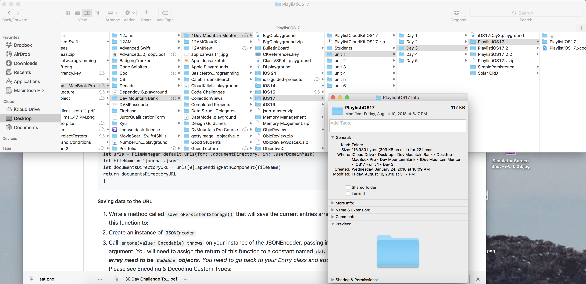

Journal
Students will build a simple journal app to practice MVC separation, segues, table views, and persistence.
Journal is an excellent app to practice basic Cocoa Touch principles and design patterns. Students are encouraged to repeat building journal regularly until they master the principles and patterns, eventually being able to build journal without the help of a guide.
Students who complete this project independently can:
Day One
Understand basic model-view-controller design and implementation
Create a custom model object with a memberwise initializer
Understand, create, and use a shared instance
Create a model object controller with create and delete functions
Implement the Equatable protocol
Understand and implement the
UITextFieldDelegateprotocol to dismiss the keyboardCreate relationship segues in Storyboards
Implement
prepare(for segue: UIStoryboardSegue, sender: Any?)to configure destination view controllersUnderstand, use, and implement the
updateViewspatternSave and load data using JSON Persistence and the Codable protocol
Day Two
Be able to use multiple models in the mvc design pattern
Be able to refactor an application to reference a new source of truth
Implement an update function on the model controller to update existing data
Day One - Model Objects and Controllers
Setup
Make sure you have downloaded this project
Create a file structure to organize your code (ex. Resources, Views, etc…). Don’t forget to fix the file path for your info.plist
Note: When using git, it is best to not create a folder (ex. Model Controller) until you have a file to put in the folder. Git does not like tracking empty folders. You can use placeholder .swift files, if you would like (ex: placeholderViewController.swift)
Entry
Create an Entry model class that will hold title, text, and timestamp properties for each entry.
Add a new
Entry.swiftfile and define a newEntryclass.Add properties for title, body and timestamp (hint: timestamp should NOT be a String or an Int).
Add a memberwise initializer that takes parameters for each property.
Consider setting a default parameter value for the timestamp.
EntryController
Create a model object controller called EntryController that will manage creating and deleting entries.
Add a new
EntryController.swiftfile and define a newEntryControllerclass.Create a
sharedproperty as a shared instance (hint: remember, shared instances require an important keyword at the beginning of the line of code).Add an
entriesarray property, and set its value to an empty array ofEntry.Create a
createEntryWith(title: ...)function that takes in atitleandbody. It should create a new instance ofEntryand add it to theentriesarray.Create a
delete(entry: Entry)function that removes an entry from the entries array.
There is no
removeObjectfunction on arrays. You will need to first find the index of the object, and then remove the object at that index.You will face a compiler error because we have not given the Entry class a way to find equal objects. To resolve the error, implement the Equatable protocol in the next step.
Equatable Protocol
Implement the Equatable protocol for the Entry class. The Equatable protocol helps to check for equality between variables of a specific class. To ensure that the two objects we are comparing are the same, we will need to make sure the values of all the variables (title, body, and timestamp) are the same.
Conform to the Equatable protocol in an extension at the bottom of the
Entry.swiftfile (outside of the Entry class). This will prompt you with an error - use the fix button to add the necessary protocol stub (function).Return the result of the comparison between the
lhsandrhsparameters by checking the property values on each parameter.If you have not already, now go back to your EntryController and finish building out the delete function.
Entry List View
Build a view that lists all journal entries. Use a UITableViewController and implement the UITableViewDataSource functions.
The UITableViewController subclass template comes with a lot of boilerplate and commented code. For readability, please remove all unnecessary boilerplate from the code.
This view will reload the table view each time it appears in order to display newly created entries.
Add a UITableViewController as the root view controller in Main.storyboard and embed it into a UINavigationController.
Create an
EntryListTableViewControllerfile as a subclass of UITableViewController. Set the class of the root view controller scene in your Main.storyboard to be anEntryListTableViewController.Implement the UITableViewDataSource functions, using the EntryController
entriesarray as your source of truth. Pay attention to thereuseIdentifierin the Storyboard scene and thedequeueReusableCell(withIdentifier:for:)function call.Set up the cells to display the title of the entry (hint: this will need to be done in the cellForRowAt method). Do not forget to set your cell type to
basicon your view controller scene.Implement the UITableViewDataSource
tableView(_:commit:forRowAt:)function to enable swipe to delete functionality.Add a UIBarButtonItem to the UINavigationBar. Select
Addin the System Item menu dropdown, on the Identity Inspector, to set the button as a plus symbol. Don’t do anything further with this button, we will take care of it later.
Pause and test things out….
If you run your application now, you should see a tableView with nothing on it. You should also see a plus button in the top right corner that, when tapped, does nothing. While this is correct, it doesn’t really give us a way of testing out our code. At the moment, we still have a bit more to implement before we can test anything. This is where mock data becomes useful. In your viewDidLoad lifecycle method, after super.viewDidLoad(), add the following code EntryController.shared.createEntryWith(title: "Test Title", body: "Test Body"), followed by tableView.reloadData()
Re-run your app. You should now see an entry on your tableView with the title “Test Title”. Clicking on it won’t do anything yet, however, you should be able to swipe to delete. If you can see “Test Title” and are able to delete it, your code is in a good place and you can move on. If not, spend 20 minutes to try and work it out. If you cannot solve your problem in 20 minutes, post a message in the queue channel on discord.
Once you have everything working, make sure to remove the two lines of code we added to the viewDidLoad lifecycle method.
Detail View
Build a view that allows a user to create a new entry or view an existing one. Use a UITextField to capture the title, a UITextView to capture the body, a UIBarButtonItem to save the new entry, and a UIButton to clear the title and body text areas.
The Detail View should follow the updateViews pattern for updating the view elements with the details of a model object. To follow this pattern, add an updateViews function that checks for a model object. The function updates the view with details from the model object.
Add an
EntryDetailViewControllerfile as a subclass of UIViewController and add an optionalentryproperty to the class. You can remove the navigation boiler-plate code.Add a UIViewController scene to Main.storyboard and set the class to
EntryDetailViewControllerAdd a UITextField for the entry’s title text to the top of the scene (don’t forget to constrain it), add an outlet to the class file called
titleTextField.Select your UITextField and give it a default placeholder of “Enter title here…”
Add a UITextView for the entry’s body text beneath the title text field and add an outlet to the class file
bodyTextView.Give the UITextView a default text of “Write entry here… “
Add a UIButton beneath the body text view and add an IBAction to the class file that clears the text in the titleTextField and bodyTextView.
Now, we need to add a save button to the top right corner, but our navigation bar is not present because we have not created a segue from the EntryListTableViewController yet. So let’s do that, and then we can wrap up our detail view.
Segue
Add two separate segues from the List View to the Detail View. The segue from the plus button will tell the EntryDetailViewController that it should create a new entry. The segue from a selected cell will tell the EntryDetailViewController that it should display a previously created entry.
Add a
showsegue from the Add button to the EntryDetailViewController scene. This segue will not need an identifier since we will not be passing information using this segue.Add a
showsegue from the table view cell to the EntryDetailViewController scene and give the segue an identifier. When naming the identifier, consider that this segue will be used not only to display an existing entry but also to edit an entry( more on this in day 2).Add a
prepare(for segue: UIStoryboardSegue, sender: Any?)function to the EntryListTableViewController (hint: this comes as part of the boiler-plate code, all you should have to do is uncomment it).Implement the
prepare(for segue: UIStoryboardSegue, sender: Any?)function. If the identifier isshowEntry(or whatever name you used on Step 2) we will pass the selected entry to the DetailViewController, which will call ourupdateViews()function (which we will create shortly).
You will need to capture the selected entry by using the indexPath of the selected row.
Remember that the
updateViews()function will update the destination view controller with the entry details.
Wrap-Up Detail View
Hop back to your EntryDetailViewController and finish out the remaining steps.
Add a UIBarButtonItem to the UINavigationBar as a
SaveSystem Item and add an IBAction to the class file calledsaveButtonTapped.In the
saveButtonTappedIBAction, using an if let (conditional unwrapping), check if the optionalentryproperty holds an entry. If it does, add a print statement that says “to be implemented tomorrow”. If not (meaning if theentryproperty is nil), call thecreateEntryWith()function that lives on theEntryController. This will require you to use your outlets to access the values in the titleTextField and bodyTextView.Still inside the
saveButtonTappedIBAction, but outside the scope of the if let, add code to dismiss the current view and pop back to theEntryListTableViewController.Add an
updateViews()function that checks if the optionalentryproperty holds an entry (hint: use a guard statement to do this). If it does, implement the function to update all view elements that reflect details about the model objectentry(in this case, the titleTextField and bodyTextView)Update the
viewDidLoad()function to callupdateViews()
At this point your app should be working almost perfectly. You might notice, however, when you create a new entry and navigate back to the EntryListTableViewController, your new entry is not there. To fix this, call the method to reload your tableView’s data inside of the viewWillAppear() function on your TableViewController (hint: you will need to add this lifecycle method, viewWillAppear, to your code).
At this point, everything should be working. However, we do still have one final problem. If we stop the app and re-run it, none of our data is there. To solve this, we are going to need to add persistence.
Add Data Persistence functionality to the EntryController
Our EntryController object is the source of truth for entries. We are now going to add a layer of persistent storage. We need to update the EntryController to save the entries array to persistent storage when a change happens (whether it be an entry is created or deleted). We will also need to create the functionality to save to the persistent store and load from it.
Creating the URL
Copy and paste this method into the project. Note that this method returns a URL, which is the URL for the file location where we will be saving our data.
private func fileURL() -> URL {
let urls = FileManager.default.urls(for: .documentDirectory, in: .userDomainMask)
let documentsDirectoryURL = urls[0].appendingPathComponent("Journal.json")
return documentsDirectoryURL
}
Saving data to the URL
Write a method called
saveToPersistentStorage()that will save the current entries array to a file on disk.Call
encode(value: Encodable) throwson an instance of JSONEncoder, passing in the array of entries as the Encodable argument. Assign the return of this function to a constant nameddata. _**NOTE - The objects in the array need to beCodableobjects.** Go back to the Entry class and adopt the Codable protocol. Please see Encoding & Decoding Custom Types: https://developer.apple.com/documentation/foundation/archives_and_serialization/encoding_and_decoding_custom_types or reference the guided lecture from this morning.Notice that this function throws; that means that this function will throw an error if it does not work the way it should when called. Functions that throw need to be marked with
tryin front of the function call. Put this call inside a do try catch block andcatchany error that throws.Call
data.write(to: URL)This function asks for a URL. We can pass in thefileURL()as an argument, which will write the data at the URL. Hint - This is also a throwing function and needs ALL the parts of a do try catch block.Call
saveToPersistentStorage()any time that the list of entries is modified (CRUD functions).
Quick lesson on local urls
The screenshot below shows how local URLs work. URLs are not just web-based. On the computer, there are local file URLs. Open the finder and right-click to get info. When done, it will show the location of the folder on the local machine. For example, Joey’s Mac / Desktop / Dev Mountain Bank / etc.
Local files are separated by components which are forward-slashes. Extensions are . (dots). Images are a good example of extensions such as .jpg or .png. In the above code, we are saving our information as .json data.
Loading data from the URL
Write a method called
loadFromPersistentStorage()that will load the current data from the file on disk where we saved our entries(data).Create a constant called
datato hold the data that you will get back by callingData(contentsOf:). Now pass in thefileURL()as an argument (hint: this is a throwing function).Call
decode(from:)on an instance of the JSONDecoder. Assign the return of this function to a constant namedentries. This function takes in two arguments: a type[Entry].selfand your instance of data. It will decode the data into an array of Entry.Now set self.entries to this array of entries.
Finally, you need to call the
loadFromPersistentStorage()function. While there are many different places you could do this successfully, for now, go to theviewDidLoad()lifecycle method in yourEntryListTableViewControllerand callEntryController.shared.loadFromPersistentStorage().
Note: The first time you run your app after implementing your persistence functions you will have no saved data, and therefore you will see an error message in your debug console. This is normal. After you have stored data you should not receive an error message when
loadFromPersistentStorage()is called.
Run the app; it should now function properly— make sure to thoroughly test for bugs. You should be able to:
Upon launch, see a tableView with all entries (there will be no entries if you haven’t created any yet, or have deleted all of them).
Be able to click the add button in the top right corner and navigate to the
EntryDetailViewController.Be able to hit the clear button at the bottom of the screen and see you text field and text view become empty.
Click the save button in the top right corner of the
EntryDetailViewControllerand be navigated back to theEntryListTableViewController, where you should then see your newly created entry.Be able to click on an entry in the
EntryListTableViewControllerand be navigated to theEntryDetailViewControllerwhere you should see that entry’s title and body text (if you click save here it should simply navigate you back to theEntryListTableViewControllerand your debug console should prompt you with a message that says: “to be implemented tomorrow”).